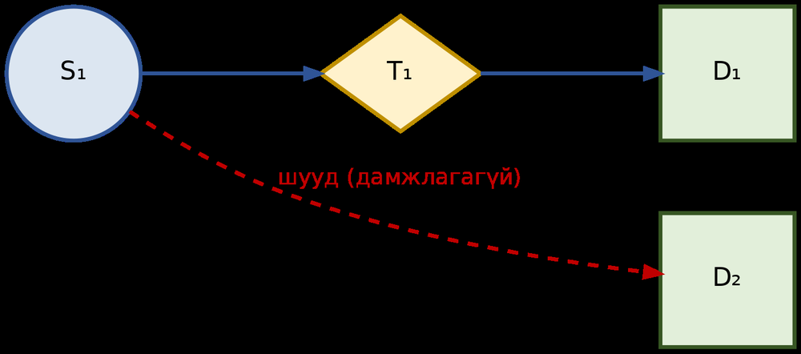
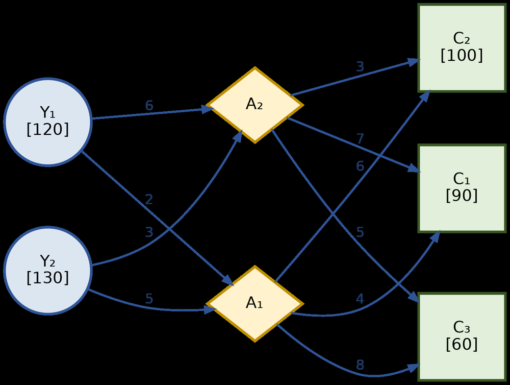

Тээврийн бодлого 2 шатлалт, дамжин өнгөрөх нь 3+ шатлалт — яг юугаараа ялгарах вэ?
Зангилааны 3 төрөл, Сум / Ирмэг, ба бүлгийн зүрх — Урсгалын хамгаалалтын дүрэм.
Сум бүрийн урсгалыг өөрөө тааруулж, зангилаа бүрийн тэнцвэрийг шалгана.
Сүлжээг тээврийн хүснэгт рүү хөрвүүлж, Бүлэг 8-ын VAM, MODI-оор шийднэ.
Пиццаны түгээлтийн төв, Amazon, Alibaba, онцгой байдлын ложистик.
10 бүлгийн аялал, аргуудын газрын зураг, ба арга сонгогч тоглоом.
Бараа үйлдвэрээс шууд дэлгүүр рүү очдоггүй — зам зуур агуулах, ангилах төв, түгээлтийн төвөөр дамждаг. Яг энэ бодит нөхцөлийн математик загвар.
Дамжин өнгөрөх тээврийн бодлогод ачаа нийлүүлэгчээс хэрэглэгч рүү шууд биш, харин нэг буюу хэд хэдэн дамжин өнгөрөх (завсрын) зангилаагаар дамжин очиж болно.
Тээврийн бодлого: нийлүүлэгч → хэрэглэгч (2 шатлалт, шууд холбоо).
Дамжин өнгөрөх бодлого: нийлүүлэгч → завсрын цэг → хэрэглэгч (3 буюу түүнээс дээш шатлалт).
Агуулах – дэлгүүр – хэрэглэгч гэсэн 3 түвшинт тархалт; бөөний бааз нь дамжин өнгөрөх зангилаа болно.
Тэнхлэг–Хигээс загвар: агаарын тээвэр, авто тээврийн шилжих цэгүүд.
Агуулахад ачааг нэгтгэснээр (Consolidation) нэгж зардал доошилно; хугацаа хэмнэгдэнэ.
Ачааны машин, контейнерийг хоосон буцаахгүй — дамжлагын цэгүүдэд оновчтой хуваарилна.
Ачааг нэгтгэснээр нийт километр, түлшний зарцуулалт багасна.
1950-иад оны эцсээс судлагдаж, 1990-ээд оны компьютержилтээр практикт нэвтэрсэн. Amazon (1994), Alibaba (1999) үүнийг ложистикийнхээ цөм болгосон.
| Шинж чанар | Энгийн тээвэр (Бүлэг 8) | Дамжин өнгөрөх тээвэр (Бүлэг 10) |
|---|---|---|
| Шатлал | Зөвхөн 2 шатлалт | 3 буюу түүнээс дээш шатлалт |
| Зангилааны төрөл | 2 төрөл: нийлүүлэгч, хэрэглэгч | 3 төрөл: + дамжин өнгөрөх (завсрын) зангилаа |
| Ачааны зам | Нийлүүлэгчээс хэрэглэгч рүү шууд | Завсрын цэгээр дамжина — шууд бус |
| Уян хатан байдал | Маршрут тогтмол | Олон боломжит маршрутаас хамгийн хямдыг сонгоно |
| Эдийн засаг | Нэг маршрут, нэг зардал | Завсрын цэгт ачааг нэгтгэж том хэмжээгээр цааш дамжуулна |
Энгийн: Улаанбаатарын үйлдвэр → Дархан хот руу шууд хүргэлт. Дамжин өнгөрөх: Улаанбаатарын үйлдвэр → Дарханы агуулах → Эрдэнэтийн дэлгүүр → хэрэглэгч. Ингэснээр «шууд явах уу, Дарханаар дамжуулах уу?» гэсэн сонголтын асуудал үүснэ.
Дамжин өнгөрөх бодлого хүснэгт бус, сүлжээ хэлбэрээр илэрхийлэгдэнэ. Бүх зүйл зөвхөн зангилаа (Node) ба сум (Arc)-аар бичигдэнэ — Графын онолын хэл.
Ачаа гарах цэг: үйлдвэр, ферм, нийлүүлэгч. Энэ зангилаа руу ямар ч ачаа орж ирдэггүй.
Ачаа ирж, дараа нь дамжин явдаг цэг: агуулах, хуваарилах төв, ангилах станц. Ирсэн = гарсан.
Ачаа ирэх эцсийн цэг: хэрэглэгч, дэлгүүр, зорилтот хот. Тэндээс цааш ачаа явдаггүй.
cᵢⱼ — тээвэрлэлтийн зардал (нэг нэгжид), заавал байна. · uᵢⱼ — хамгийн их багтаамж (шаардлагатай бол, 10.9.1). · xᵢⱼ — одоогийн урсгал, энэ бол бидний олох шийдвэрийн хувьсагч.
S₁→T₁, S₁→T₂ S₂→T₁, S₂→T₂ S₃→T₁, S₃→T₂
T₁→D₁, T₁→D₂, T₁→D₃, T₁→D₄
T₂→D₁, T₂→D₂, T₂→D₃, T₂→D₄

Шууд холбоос нэмэлт хязгаарлалт шаардахгүй — зүгээр л cᵢⱼ-тэйгээ нэмэгдэнэ. Алгоритм өөрөө хамгийн хямд маршрутыг сонгоно.
Гарсан нийт ачаа = нийлүүлэлт. Зөвхөн гарах урсгал. Бүлэг 8-ын нийлүүлэлтийн хязгаарлалттай ижил.
Ирсэн нийт ачаа = явсан нийт ачаа. Энэ бол шинэ, зөвхөн Бүлэг 10-д гарч ирдэг мөр.
Ирсэн нийт ачаа = эрэлт. Зөвхөн орох урсгал. Бүлэг 8-ын эрэлтийн хязгаарлалттай ижил.
ΣS aS = ΣD bD
Нийт нийлүүлэлт = нийт эрэлт. Тэнцвэргүй бол зохиомол зангилааг (Dummy) зөвхөн нийлүүлэгч эсвэл хүрэх цэгийн түвшинд нэмнэ — дамжин өнгөрөх зангилаанд шаардлагагүй, тэдгээр урсгалын хамгаалалтын дүрмээр автоматаар тэнцвэржсэн байдаг.
Дамжин өнгөрөх бодлогод шинэ алгоритм хэрэггүй. Сүлжээг стандарт тээврийн хүснэгт рүү хөрвүүлээд Бүлэг 8-ын Баруун дээд өнцгийн арга, LCM, VAM, MODI-г шууд хэрэглэнэ.
Нийт m + p + n ширхэг тэнцэтгэлт хязгаарлалт · хамгийн ихдээ m·p + p·n + m·n хувьсагч. Тээврийн бодлогоос илүү цогц систем боловч 10.6-ын хөрвүүлэлтээр маш энгийнээр шийдэгдэнэ.
Дамжин өнгөрөх зангилаанд «хамгийн ихдээ хичнээн ачаа урсаж болох вэ» гэсэн зохиомол дээд хязгаар өгч, ашиглагдаагүй хэсгийг Self-loop-оор (зардал 0) өөрт нь буцаана. Ингэснээр бодлого бүрэн стандарт Тээврийн бодлого болно.
| T₁ | T₂ | D₁ | D₂ | D₃ | Нийлүүлэлт | |
|---|---|---|---|---|---|---|
| S₁ | 3 | 4 | 10 | 12 | 15 | 100 |
| S₂ | 5 | 2 | 8 | 6 | 11 | 150 |
| T₁ | 0* | 3 | 2 | 4 | 5 | 250 (буфер) |
| T₂ | 3 | 0* | 6 | 1 | 3 | 250 (буфер) |
| Эрэлт | 250 (буфер) | 250 (буфер) | 80 | 90 | 80 | Нийт: 750 |
| Алхам | Хуваарилалт | Хэмжээ | Зардал |
|---|---|---|---|
| 1 | T₁ → D₁ | 80 | 2 |
| 2 | S₂ → T₂ | 150 | 2 |
| 3 | T₁ → T₁ (буфер) | 170 | 0 |
| 4 | T₂ → D₃ | 80 | 3 |
| 5 | T₂ → D₂ | 90 | 1 |
| 6 | T₂ → T₂ (буфер) | 80 | 0 |
| 7 | S₁ → T₂ | 20 | 4 |
| 8 | S₁ → T₁ | 80 | 3 |
80(2)+150(2)+80(3)+90(1)+20(4)+80(3)
= 160+300+240+90+80+240 = 1,110 нэгж
Буферийн 0 зардалтай нүднүүд нийт зардалд нөлөөлөхгүй.
| U(S₁) | U(S₂) | U(T₁) | U(T₂) | V(T₁) | V(T₂) | V(D₁) | V(D₂) | V(D₃) |
|---|---|---|---|---|---|---|---|---|
| 0 | −2 | −3 | −4 | 3 | 4 | 5 | 5 | 7 |
| Эх сүлжээний урсгал | Хэмжээ | Зардал | cᵢⱼ×xᵢⱼ |
|---|---|---|---|
| S₁ → T₁ | 80 | 3 | 240 |
| S₁ → T₂ | 20 | 4 | 80 |
| S₂ → T₂ | 150 | 2 | 300 |
| T₁ → D₁ | 80 | 2 | 160 |
| T₂ → D₂ | 90 | 1 | 90 |
| T₂ → D₃ | 80 | 3 | 240 |
240+80+300+160+90+240 = 1,110 нэгж
Хүснэгтээс тооцоолсон дүнтэй яг таарч байна — шийд боломжит (Feasible) бөгөөд оновчтой.
2 үйлдвэр Ү₁, Ү₂ (нийлүүлэгч) · 2 бөөний агуулах А₁, А₂ (дамжин өнгөрөх зангилаа) · 3 салбар С₁, С₂, С₃ (хүрэх цэг). Аюулгүй байдлын шаардлагаар пицца үйлдвэрээс шууд салбар руу явдаггүй — бүх ачаа заавал агуулахаар дамжина.
| Нийлүүлэлт (хайрцаг/өдөр) | Эрэлт (хайрцаг/өдөр) |
|---|---|
| Ү₁ = 120 | С₁ = 90 |
| Ү₂ = 130 | С₂ = 100 |
| Нийт = 250 | С₃ = 60 → Нийт = 250 |
| Зардал (мян.₮/хайрцаг) | А₁ | А₂ |
|---|---|---|
| Ү₁ | 2 | 6 |
| Ү₂ | 5 | 3 |
| Зардал (мян.₮/хайрцаг) | С₁ | С₂ | С₃ |
|---|---|---|---|
| А₁ | 4 | 6 | 8 |
| А₂ | 7 | 3 | 5 |

| А₁ | А₂ | С₁ | С₂ | С₃ | Нийлүүлэлт | |
|---|---|---|---|---|---|---|
| Ү₁ | 2 | 6 | – | – | – | 120 |
| Ү₂ | 5 | 3 | – | – | – | 130 |
| А₁ | 0* | – | 4 | 6 | 8 | 250 (буфер) |
| А₂ | – | 0* | 7 | 3 | 5 | 250 (буфер) |
| Эрэлт | 250 | 250 | 90 | 100 | 60 | Нийт: 750 |
Хуваарилагдсан нүдний тоо = 8 = m + n − 1 = 4 + 5 − 1 → шийд гажуудалгүй (Бүлэг 8.6.1-ийн тохиолдол биш), MODI шалгалтад шууд бэлэн.
| Алхам | Хуваарилалт | Хэмжээ | Зардал |
|---|---|---|---|
| 1 | Ү₁ → А₁ | 120 | 2 |
| 2 | А₁ → А₁ (буфер) | 130 | 0 |
| 3 | Ү₂ → А₂ | 130 | 3 |
| 4 | А₂ → А₂ (буфер) | 120 | 0 |
| 5 | А₁ → С₁ | 90 | 4 |
| 6 | А₂ → С₂ | 100 | 3 |
| 7 | А₁ → С₃ | 30 | 8 |
| 8 | А₂ → С₃ | 30 | 5 |
| Эх сүлжээний урсгал | Хайрцаг | c | Нийт |
|---|---|---|---|
| Ү₁ → А₁ | 120 | 2 | 240 |
| Ү₂ → А₂ | 130 | 3 | 390 |
| А₁ → С₁ | 90 | 4 | 360 |
| А₁ → С₃ | 30 | 8 | 240 |
| А₂ → С₂ | 100 | 3 | 300 |
| А₂ → С₃ | 30 | 5 | 150 |
| U(Ү₁) | U(Ү₂) | U(А₁) | U(А₂) | V(А₁) | V(А₂) | V(С₁) | V(С₂) | V(С₃) |
|---|---|---|---|---|---|---|---|---|
| 0 | −2 | −2 | −5 | 2 | 5 | 6 | 8 | 10 |
А₁ → С₂ нүдэнд Δ = 6 − (−2 + 8) = 0. Энэ нь олон оновчтой шийд байгааг илтгэнэ (Бүлэг 8.6.2) — компани ижил нийт зардлаар өөр хуваарилалт сонгож болно, энэ нь менежерт нэмэлт уян хатан байдал өгнө.
240+390+360+240+300+150 = 1,680 мян.₮ / өдөрт
| Amazon-ы бүтэц | Дамжин өнгөрөх загварын дүрд |
|---|---|
| Fulfillment Centers Гүйцэтгэлийн төвүүд | Нийлүүлэгч (Source) |
| Sortation Centers Ангилах төвүүд | Дамжин өнгөрөх зангилаа |
| Delivery Stations Хүргэлтийн станцууд | Дамжин өнгөрөх зангилаа |
| Хэрэглэгчийн хаяг | Хүрэх цэг (Destination) |
Мянга мянган түгээлтийн төв, AI-тай хосолсон дамжин өнгөрөх систем, улс хоорондын Consolidation Hub.
| 10.8.6 · Бичил жишээ (2 FC × 2 SC × 3 Z) | Хэмжээ | Нийт |
|---|---|---|
| FC₁ → SC₁ (c=4) | 140 | 560 |
| FC₁ → SC₂ (c=7) | 60 | 420 |
| FC₂ → SC₂ (c=3) | 180 | 540 |
| SC₁ → Z₁ (c=3) | 140 | 420 |
| SC₂ → Z₂ (c=2) | 150 | 300 |
| SC₂ → Z₃ (c=4) | 90 | 360 |
xᵢⱼ ≤ uᵢⱼ — замын хүчин чадал, машины багтаамж, хилийн боомт. VAM/MODI-г хязгаарлагдсан хувьсагчийн симплекстэй хослуулна.
Үйлдвэр → бүсийн агуулах → хотын агуулах → хорооллын цэг → хэрэглэгч. Логик өөрчлөгдөхгүй — зангилаа бүр нэг мөр, нэг багана нэмнэ.
cᵢⱼ тогтмол биш, cᵢⱼ(t) — түгжрэл, улирлын оргил ачаалал, зам хаагдах. Хамгийн хямд маршрут цагаас хамаарч өөрчлөгдөнө.
Нэг агуулахад пицца, мах, гарс зэрэгцэн орно. Хамааралгүй бол тусад нь бодно; нийтлэг багтаамж хуваалцвал — Multi-commodity Flow.
COVID-19 вакцин, газар хөдлөлтийн хүнс. Зорилго нь заримдаа зардал биш — хамгийн богино хугацаанд хамгийн олон хүнд хүрэх.
x(А,Т₁) ≤ 100 хязгаарлалт нийт зардлыг 2,360 → 2,560 болгож 200 нэгжээр өсгөнө. Энэ бол Бүлэг 7-ийн сүүдрийн үнэтэй адил ойлголт.
Бодит асуудлыг математикийн хэл рүү орчуулж, график ба матрицын аргаар суурь ойлголтоо бэхжүүлсэн.
Симплекс, Big-M-ийг эзэмшиж, хосмог бодлогоор сүүдрийн үнийг олж мэдсэн.
Тээврийн бодлогоор VAM, MODI эзэмшиж, бүхэл тоон программчлалыг судалсан.
Өнөөдөр энэ бүхнийг нэгтгэн, ложистикийн сүлжээний бодлогыг бүрэн шийдэж чадах боллоо.
| Арга | Бүлэг | Хэзээ хэрэглэх вэ? |
|---|---|---|
| Графикийн арга | 3 | Яг 2 шийдвэрийн хувьсагчтай бодлого — боломжит мужийг зурж, оройнуудыг шалгана |
| Матрицын арга | 4 | Тэгшитгэлийн системийг матрицаар бичиж, суурь шийдүүдийг олох |
| Симплекс арга | 5 | Олон хувьсагчтай, бүх хязгаарлалт ≤ хэлбэрийн max бодлого — ШП-ийн гол алгоритм |
| Big-M арга | 6 | ≥ ба = хязгаарлалт агуулсан бодлого — зохиомол хувьсагч, M торгууль шаардана |
| Хосмог бодлого | 7 | Нөөцийн сүүдрийн үнэ, эдийн засгийн тайлбар, мэдрэмжийн шинжилгээ |
| Баруун дээд өнцгийн арга · LCM · VAM | 8 | Тээврийн хүснэгтийн гарааны шийд олох гурван арга (VAM хамгийн нарийвчлалтай) |
| MODI (потенциалын арга) | 8 | Тээврийн гарааны шийдийн оновчлолыг шалгаж сайжруулах (Δᵢⱼ = cᵢⱼ − Uᵢ − Vⱼ) |
| Салбарлан зааглах арга | 9 | Шийд заавал бүхэл тоо байх ёстой бодлого — машин, ажилтан, 0/1 сонголт |
| Дамжин өнгөрөх тээвэр | 10 | Завсрын зангилаатай 3+ түвшинт сүлжээ — буфер нэмж хүснэгт болгоно |
Танд одоо бодит бизнесийн асуудлыг тоо баримт болгон харах, математик загварт хувиргах, зохих алгоритмаар шийдэж, эцэст нь шийдлийг бодит амьдрал дээр хэрэгжүүлэх бүрэн чадвар бий болсон байна. Энэ бол зөвхөн эхлэл.